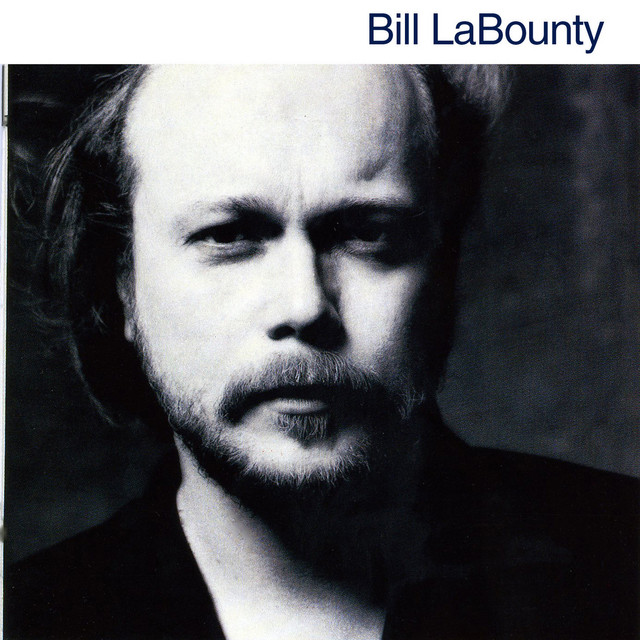

Bill LaBounty - Bill LaBounty



Información del álbum facilitada por discogs.com:
Fecha de lanzamiento: 1982
Géneros: Rock, Pop
Estilos: Soft Rock
Tracklist:
A1. Livin’ It Up (f2eat. Willie Weeks & Steve Gadd & Bill LaBounty & Dean Parks & Bill LaBounty & Gwen Dickey & Patti Austin & Lenny Castro & Clarence McDonald & Ian Underwood & Bill LaBounty & Mann And Weil) 4:20
A2. Didn’t Want To Say Goodbye (f2eat. Chuck Rainey & Andy Newmark & Bill LaBounty & Dean Parks & Bill LaBounty & James Taylor (2) & Al Perkins & Lenny Castro & Bill LaBounty & Roy Freeland) 2:47
A3. Dream On (f2eat. Johnny Mandel & Chuck Rainey & Russ Titelman & Jeff Porcaro & Greg Phillinganes & Dean Parks & Steve Lukather & Leslie Smith & Lenny Castro & Bill LaBounty & Dean Parks & Ian Underwood & Bill LaBounty & Stephen Geyer) 4:20
A4. Slow Fade (f2eat. David Sanborn & Nick DeCaro & Chuck Rainey & Andy Newmark & Bill LaBounty & Dean Parks & Steve Lukather & Lenny Castro & Greg Phillinganes & Ian Underwood & Bill LaBounty & Roy Freeland) 4:14
A5. Comin’ Back (f2eat. Chuck Rainey & Jeff Porcaro & Bill LaBounty & Dean Parks & Steve Lukather & David Sanborn & Lenny Castro & Greg Phillinganes & Ian Underwood & Russ Titelman & Bill LaBounty & Roy Freeland) 3:43
B1. Look Who’s Lonely Now (f2eat. Chuck Rainey & Jeff Porcaro & Bill LaBounty & Patti Austin & Lenny Castro & Greg Phillinganes & Steve Lukather & Dean Parks & Ian Underwood & Nyle Steiner & Bill LaBounty & Roy Freeland) 3:54
B2. Never Gonna Look Back (f2eat. Nick DeCaro & Willie Weeks & Steve Gadd & Bill LaBounty & Dean Parks & James Taylor (2) & Jennifer Warnes & Lenny Castro & Ian Underwood & Nyle Steiner & Bill LaBounty & Cynthia Weil & Kathy Wakefield) 3:12
B3. It Used To Be Me (f2eat. Nick DeCaro & Chuck Rainey & Andy Newmark & Greg Phillinganes & Dean Parks & Lenny Castro & Bill LaBounty & Roy Freeland) 4:10
B4. Nobody’s Fool (f2eat. Dean Parks & Chuck Rainey & Jeff Porcaro & Greg Phillinganes & Steve Lukather & Gwen Dickey & Patti Austin & Stephen Bishop & Lenny Castro & Bill LaBounty & Ian Underwood & Nyle Steiner & Bill LaBounty & Mann And Weil) 3:28
B5. Secrets (f2eat. Nick DeCaro & Chuck Rainey & Andy Newmark & Dean Parks & Bill LaBounty & Patti Austin & Greg Phillinganes & Lenny Castro & Ian Underwood & Nyle Steiner & Russ Titelman & Bill LaBounty & Roy Freeland) 3:48